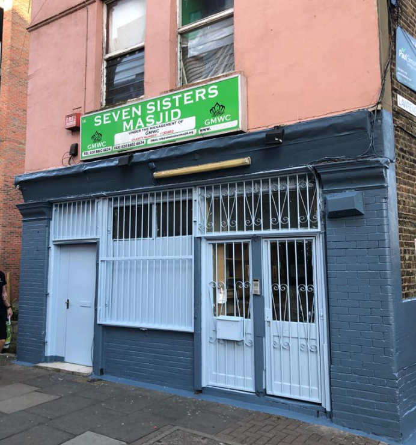

Prayer Times in Seven Sisters
Masjid

5 Daily Prayers
Seven Sister Masjid serves as a place of worship, a source of advice and support for Muslims in the area and London in general. The masjid is opened everyday to serve the primary function of the five daily prayer.

Jummah/Friday Prayers
The Masjid is open every Friday for Muslims to gather and pray. Both floors are regularly packed with worshipers of different backgrounds.